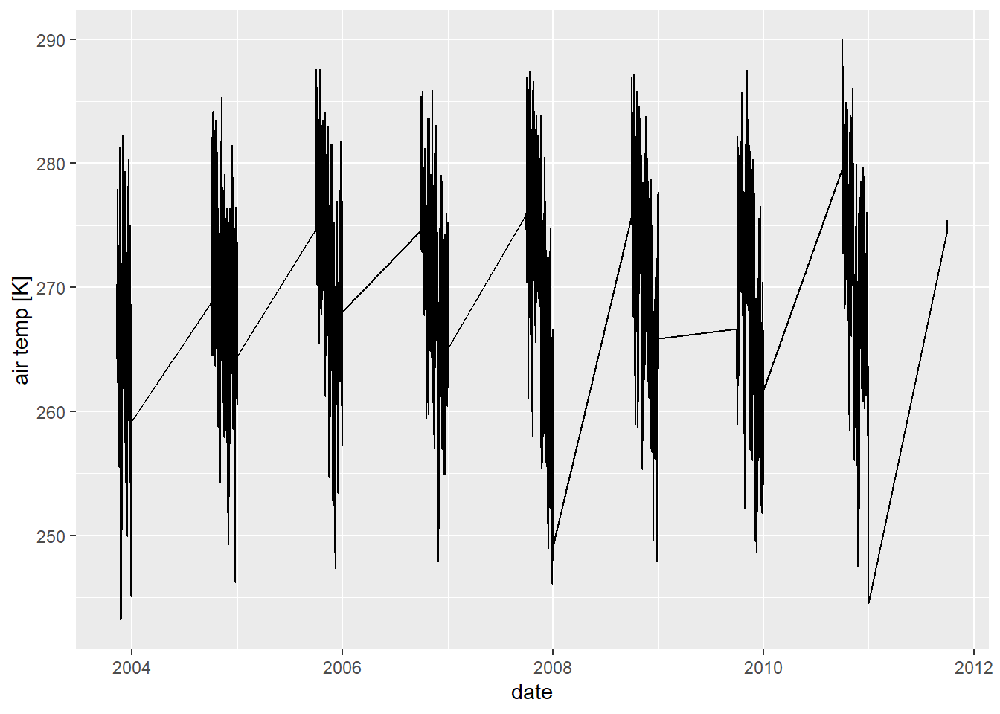
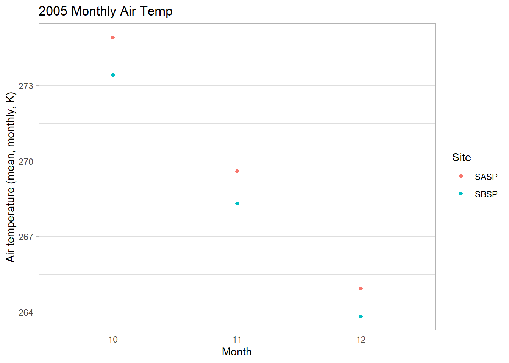
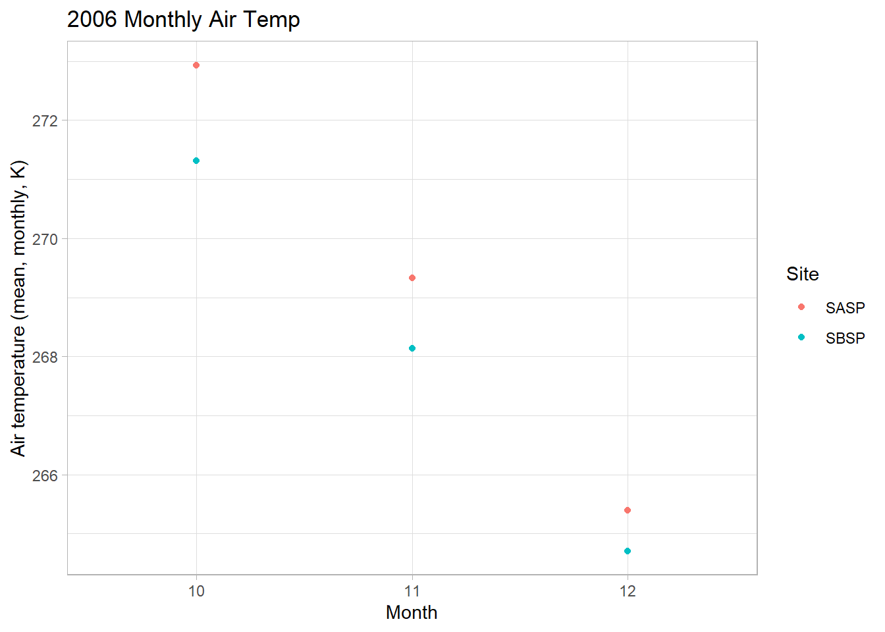
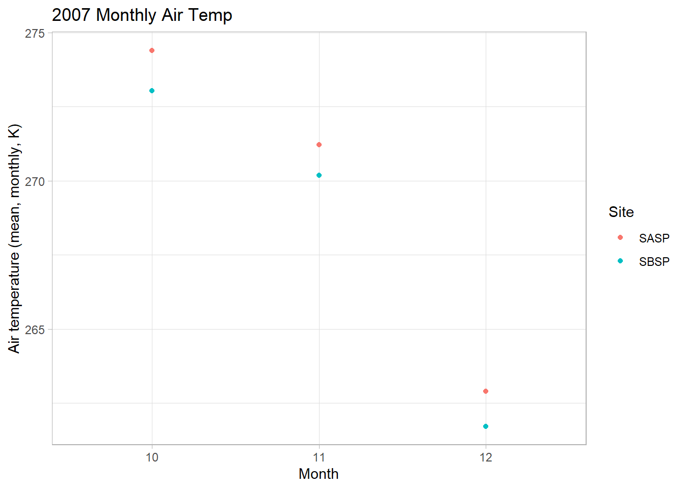
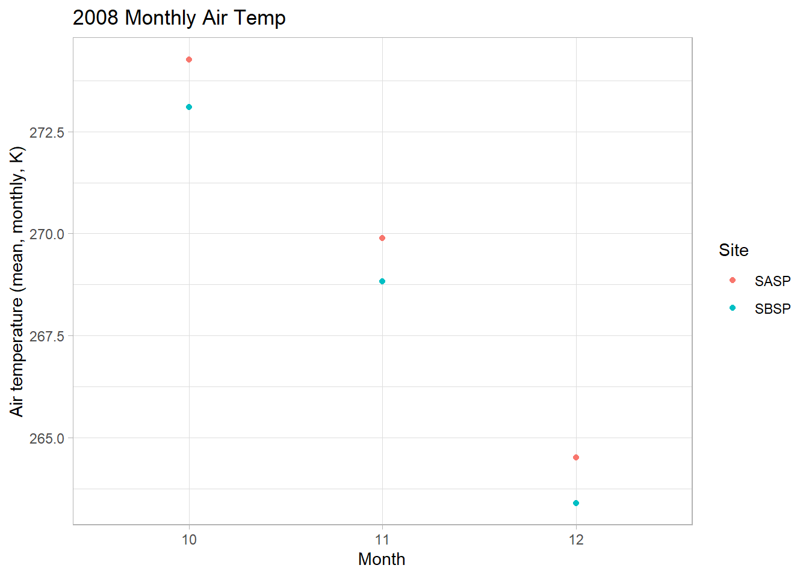
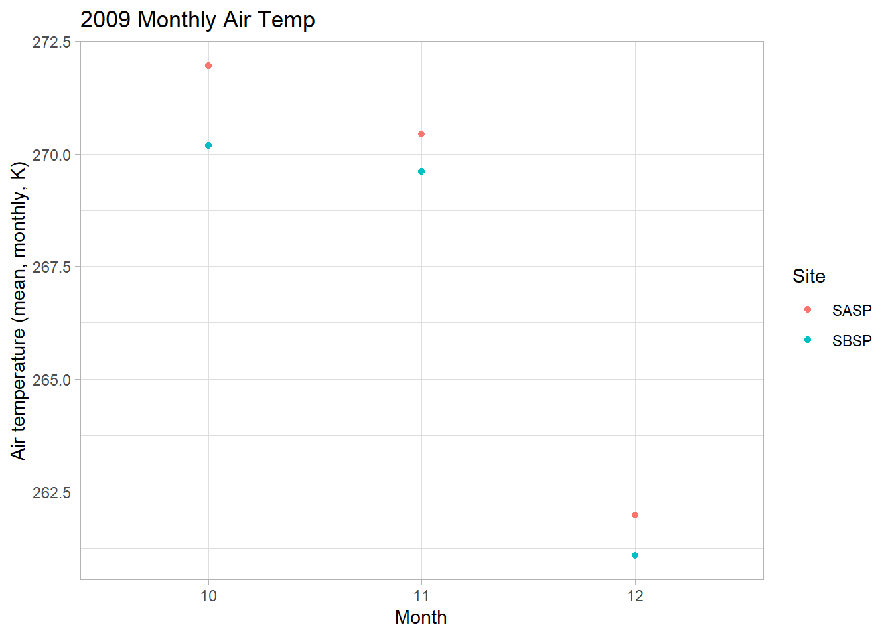
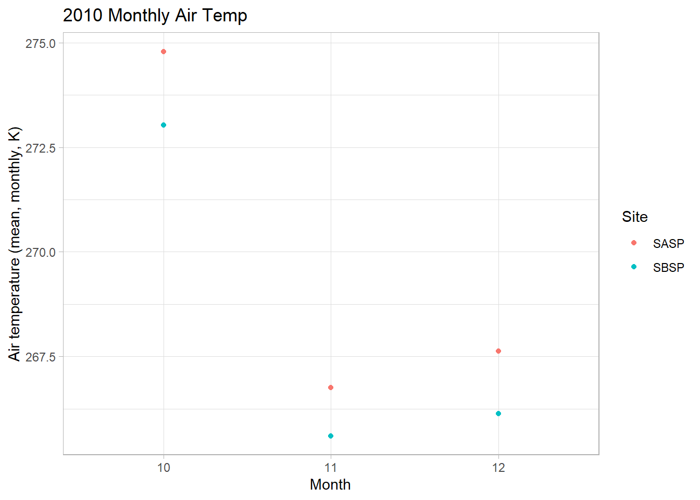

Chapter 3 Snow Data
3.1 Simple web scraping
R can read html using either rvest, xml, or xml2 packages. Here we are going to navigate to the Center for Snow and Avalance Studies Website and read a table in. This table contains links to data we want to programatically download for three sites. We don’t know much about these sites, but they contain incredibly rich snow, temperature, and precip data.
3.1.1 Reading an html
3.1.1.1 Extract CSV links from webpage
site_url <- 'https://snowstudies.org/archived-data/'
#Read the web url
webpage <- read_html(site_url)
#See if we can extract tables and get the data that way
tables <- webpage %>%
html_nodes('table') %>%
magrittr::extract2(3) %>%
html_table(fill = TRUE)
#That didn't work, so let's try a different approach
#Extract only weblinks and then the URLs!
links <- webpage %>%
html_nodes('a') %>%
.[grepl('24hr',.)] %>%
html_attr('href')3.1.2 Data Download
3.1.2.1 Download data in a for loop
#Grab only the name of the file by splitting out on forward slashes
splits <- str_split_fixed(links,'/',8)
#Keep only the 8th column
dataset <- splits[,8]
#generate a file list for where the data goes
file_names <- paste0('data/',dataset)
for(i in 1:3){
download.file(links[i],destfile=file_names[i])
}
downloaded <- file.exists(file_names)
evaluate <- !all(downloaded)3.1.2.2 Download data in a map
#Map version of the same for loop (downloading 3 files)
if(evaluate == T){
map2(links[1:3],file_names[1:3],download.file)
}else{print('data already downloaded')}## [[1]]
## [1] 0
##
## [[2]]
## [1] 0
##
## [[3]]
## [1] 03.1.3 Data read-in
3.1.3.1 Read in just the snow data as a loop
#Pattern matching to only keep certain files
snow_files <- file_names %>%
.[!grepl('SG_24',.)] %>%
.[!grepl('PTSP',.)]
#empty_data <- list()
# snow_data <- for(i in 1:length(snow_files)){
# empty_data[[i]] <- read_csv(snow_files[i]) %>%
# select(Year,DOY,Sno_Height_M)
# }
#snow_data_full <- do.call('rbind',empty_data)
#summary(snow_data_full)3.1.3.2 Read in the data as a map function
our_snow_reader <- function(file){
name = str_split_fixed(file,'/',2)[,2] %>%
gsub('_24hr.csv','',.)
df <- read_csv(file) %>%
select(Year,DOY,Sno_Height_M) %>%
mutate(site = name)
}
snow_data_full <- map_dfr(snow_files,our_snow_reader)##
## -- Column specification ---------------------------------------------------------------------------------------------------------
## cols(
## .default = col_double()
## )
## i Use `spec()` for the full column specifications.
##
##
## -- Column specification ---------------------------------------------------------------------------------------------------------
## cols(
## .default = col_double()
## )
## i Use `spec()` for the full column specifications.summary(snow_data_full)## Year DOY Sno_Height_M site
## Min. :2003 Min. : 1.0 Min. :-3.523 Length:12786
## 1st Qu.:2008 1st Qu.: 92.0 1st Qu.: 0.350 Class :character
## Median :2012 Median :183.0 Median : 0.978 Mode :character
## Mean :2012 Mean :183.1 Mean : 0.981
## 3rd Qu.:2016 3rd Qu.:274.0 3rd Qu.: 1.520
## Max. :2021 Max. :366.0 Max. : 2.905
## NA's :45543.1.3.3 Plot snow data
snow_yearly <- snow_data_full %>%
group_by(Year,site) %>%
summarize(mean_height = mean(Sno_Height_M,na.rm=T))## `summarise()` regrouping output by 'Year' (override with `.groups` argument)ggplot(snow_yearly,aes(x=Year,y=mean_height,color=site)) +
geom_point() +
ggthemes::theme_few() +
ggthemes::scale_color_few()## Warning: Removed 2 rows containing missing values (geom_point).
3.2 Assignment
3.2.1 Q1
Extract the meteorological data URLs. Here we want you to use the rvest package to get the URLs for the SASP forcing and SBSP_forcing meteorological datasets.
#Extract only weblinks and then the URLs!
met_links <- webpage %>%
html_nodes('a') %>%
.[grepl('forcing',.)] %>%
html_attr('href')
#Grab only the name of the file by splitting out on forward slashes
splits <- str_split_fixed(met_links,'/',8)
#Keep only the 8th column
dataset <- splits[,8]3.2.2 Q2
Download the meteorological data. Use the download_file and str_split_fixed commands to download the data and save it in your data folder. You can use a for loop or a map function.
#generate a file list for where the data goes
file_names <- paste0('data/',dataset)
for(i in 1:2){
download.file(met_links[i],destfile=file_names[i])
}
downloaded <- file.exists(file_names)
evaluate <- !all(downloaded)3.2.3 Q3
Write a custom function to read in the data and append a site column to the data.
# this code grabs the variable names from the metadata pdf file
library(Rcpp)
library(pdftools)
headers <- pdf_text('https://snowstudies.org/wp-content/uploads/2022/02/Serially-Complete-Metadata-text08.pdf') %>%
readr::read_lines(.) %>%
trimws(.) %>%
str_split_fixed(.,'\\.',2) %>%
.[,2] %>%
.[1:26] %>%
str_trim(side = "left")
#file <- file_names[1]
read_met_data_file <- function(file){
site_name <- str_split(file, pattern = '_')[[1]][2]
data_in <- read_delim(file, delim = ' ', col_names = headers)
data_in$site_name <- site_name
return(data_in)
}3.2.4 Q4
Use the map function to read in both meteorological files. Display a summary of your tibble.
data_out <- map(file_names, read_met_data_file)
out_tbl <- rbind(data_out[[1]], data_out[[2]])
glimpse(out_tbl)## Rows: 138,336
## Columns: 27
## $ year <dbl> 2003, 20~
## $ month <dbl> 11, 11, ~
## $ day <chr> "10", "1~
## $ hour <chr> " 1", " ~
## $ minute <chr> " 0", " ~
## $ second <chr> " 0.0"~
## $ `precip [kg m-2 s-1]` <chr> " 0.0~
## $ `sw down [W m-2]` <chr> " -9999.~
## $ `lw down [W m-2]` <chr> " -9999.~
## $ `air temp [K]` <chr> " 270.~
## $ `windspeed [m s-1]` <chr> " -9999.~
## $ `relative humidity [%]` <chr> " 91.~
## $ `pressure [Pa]` <chr> " 66863.~
## $ `specific humidity [g g-1]` <chr> " 4.18~
## $ `calculated dewpoint temperature [K]` <chr> " 0", "~
## $ `precip, WMO-corrected [kg m-2 s-1]` <dbl> 2000, 20~
## $ `air temp, corrected with Kent et al. (1993) [K]` <chr> "3000", ~
## $ `air temp, corrected with Anderson and Baumgartner (1998)[K]` <chr> " 0", ~
## $ `air temp, corrected with Nakamura and Mahrt (2005) [K]` <chr> "4009", ~
## $ `air temp, corrected with Huwald et al. (2009) [K]` <chr> " 0", ~
## $ `qc code precip` <chr> NA, NA, ~
## $ `qc code sw down` <chr> NA, NA, ~
## $ `qc code lw down` <chr> NA, NA, ~
## $ `qc code air temp` <chr> NA, NA, ~
## $ `qc code wind speed` <chr> NA, NA, ~
## $ `qc code relhum` <chr> NA, NA, ~
## $ site_name <chr> "SASP", ~3.2.5 Q5
Make a line plot of mean temp by year by site (using the air temp [K] variable). Is there anything suspicious in the plot? Adjust your filtering if needed.
plot_tbl <- out_tbl %>%
mutate(date = make_datetime(year, month, as.numeric(day), as.numeric(hour), as.numeric(minute), as.numeric(second)),
`air temp [K]` = as.numeric(`air temp [K]`)) %>%
select(date, `air temp [K]`) %>%
na.omit()
ggplot(plot_tbl, aes(x = date, y = `air temp [K]`))+
geom_line()
R is interpolating over periods of no data, leading to long, awkward gaps. If we become interested in performing annual analyses we could either interpolate them or make them explicitly NA.
3.2.6 Q6
Write a function that makes line plots of monthly average temperature at each site for a given year. Use a for loop to make these plots for 2005 to 2010. Are monthly average temperatures at the Senator Beck Study Plot ever warmer than the Snow Angel Study Plot? Hint: https://ggplot2.tidyverse.org/reference/print.ggplot.html
six_tbl <- out_tbl %>%
mutate(date = make_datetime(year, month, as.numeric(day), as.numeric(hour), as.numeric(minute), as.numeric(second)),
air_temp_k = as.numeric(`air temp [K]`))make_monthly_plots <- function(target_year = 2008){
data = six_tbl
fun_data <- six_tbl %>%
filter(year == target_year,
!is.na(month),
!is.na(`air temp [K]`)) %>%
group_by(month, site_name) %>%
summarize(mean_air_temp_k = mean(air_temp_k),
site_name = site_name) %>%
unique()
p <- ggplot(fun_data, aes(x = as.character(month), y = mean_air_temp_k, color = site_name))+
geom_point()+
theme_light()+
labs(title = paste(target_year, 'Monthly Air Temp'),
x ='Month',
y = 'Air temperature (mean, monthly, K)',
color = 'Site')
return(p)
}
map(2005:2010, make_monthly_plots)## [[1]]
##
## [[2]]
##
## [[3]]
##
## [[4]]
##
## [[5]]
##
## [[6]]
The monthly average temperatures and slighlty lower at Senator Beck.